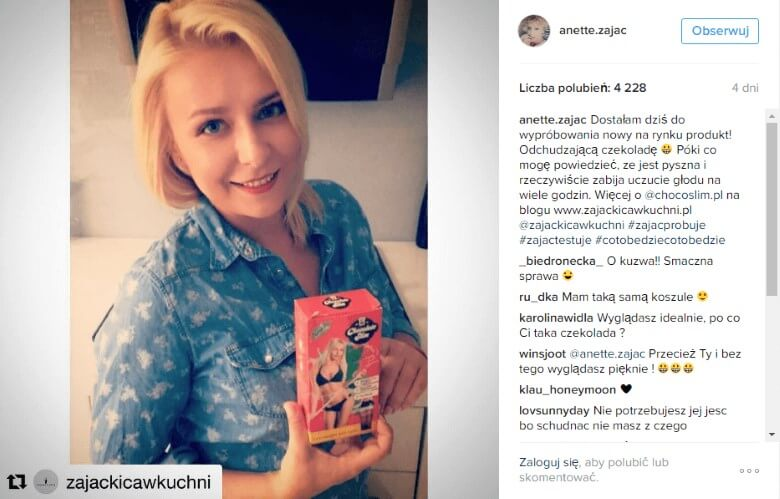
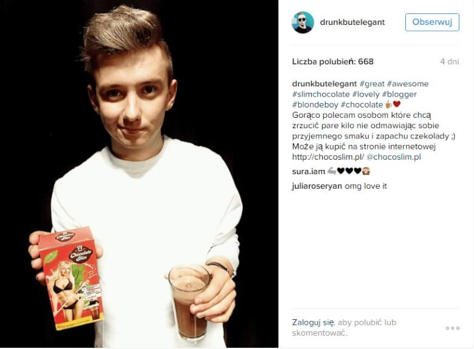
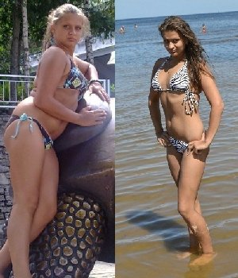

Jak schudłam z 89 kg na 55 kg
w 31 dni.

Cześć! Wszyscy zauważyli, że ostatnio bardzo schudłam i zaczęli bombardować mnie pytaniami. Starałam się odpowiedzieć wszystkim i udzielić Wam rad, ale mi się nie udało. Dostawałam zwyczajnie za dużo wiadomości. Dlatego zdecydowałam stworzyć tego posta i odpowiedzieć na pytanie: " Jak schudłam z 89 na 55 kg w 31 dni. " (To nie oznacza, że nie możecie do mnie już pisać i pytać, po prostu chciałam mieć to w jednym miejscu).

Po wielu próbach pozbycia się zbędnych kilogramów za pomocą diet, pigułek i mnóstwa pieniędzy, które wydałam na zajęcia na siłowni z trenerem osobistym, sytuacja była beznadziejna. Ale pewnego dnia zobaczyłam na Instagramie post celebrytki, którą uwielbiam. Pisała w nim o naturalnym środku . Pomyślałam, że warto spróbować. Skoro na własne oczy widziałam, że ona też to stosuje, nie miałam wyboru! A poza tym, komentarze, które czytałam w sieci też były bardzo przekonujące.

to zdjęcie pochodzi z oficjalnej strony Instagram radekpestka

to zdjęcie pochodzi z oficjalnej strony Instagram anette.zajac

to zdjęcie pochodzi z oficjalnej strony Instagram drunkbutelegant
Postanowiłam! Weszłam na ich stronę internetową , sprawdziłam wszystko dwa razy i zamówiłam zestaw odchudzający. Doszedł w ciągu kilku tygodni. Przeczytałam instrukcje i zaczęłam pić codziennie szklankę koktajlu zamiast śniadania. Jest niesamowicie treściwy!
Na koniec trzeciego tygodnia schudłam kolejne 4 kg! Teraz byłam bardziej fit i to zainspirowało mnie do zmiany nawyków, zamiast jeździć windą zaczęłam wchodzić po schodach. To co wydawało się ciężką pracą, zaczęło sprawiać mi przyjemność! Nie mogłam uwierzyć, że to dzieje się naprawdę tylko dlatego, że przestrzegam prostych zaleceń z pudełka czekolady. Jeśli mnie się udało - każdy może to zrobić! Trzy tygodnie minęły szybko i schudłam 9 kg!
Alla fine della terza settimana avevo perso altri 4 kg! EEro più in forma, il che mi ha ispirata a fare le scale invece di usare l'ascensore ogni volta. Quello che sembrava essere un duro allenamento si era rivelato un vero piacere per me! Non riuscivo a credere che fosse successo solo perché stavo seguendo le semplici istruzioni riportate sulla confezione di ! Se c'ero riuscita io, chiunque poteva farcela! Tre settimane sono passate in fretta e poco per volta ho perso 9 kg!
Osiągnęłam docelowa wagę w 31 dni. Brzuszek zniknął, schudłam 20 kilogramów i mam ciało o jakim nigdy nie śmiałam marzyć!
Teraz przy każdej okazji polecam moim przyjaciołom i znajomym. Ważne: zamów na oficjalnej stronie produktu , w przeciwnym razie możesz otrzymać podróbkę. Jestem zadowolona ze swoich wyników i wierzę, że Ty także będziesz szczęśliwa! Zapomnij o stereotypach: nie potrzebujesz diet ani ćwiczeń, żeby mieć ładną figurę!


